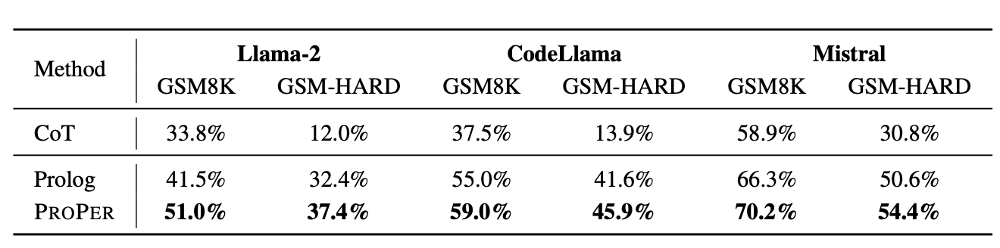
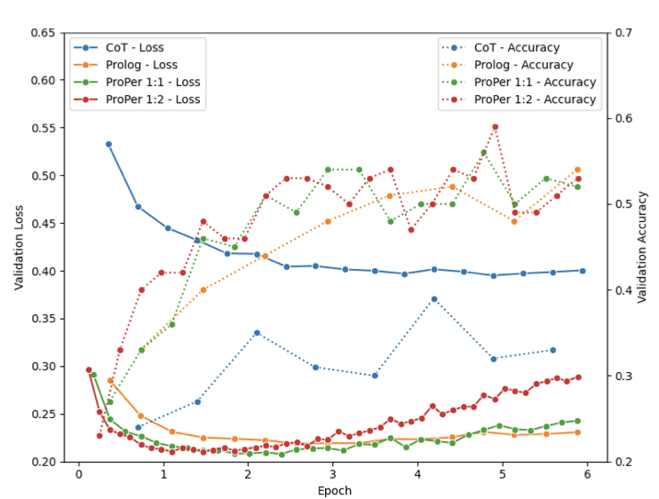

Arithmetic Reasoning with LLM: Prolog Generation & Permutation (summary)
Table of Contents
1. Motivation
The authors claim (like the authors of PAL paper) that LMs have difficulty solving arithmetic (and reasoning) tasks. However, they depart from the premise of the PAL work that LMs are good at decomposing a problem into subtasks and only need help from an interpreter to correctly execute the decomposition steps. The authors contend that techniques like COT prompting and PAL are prone to cascading of errors due to the sequential nature of the decomposition steps. They hypothesize that solving the problem in a non sequential fashion, by having the LM extract facts and rules and delegating the inference to a Prolog interpreter should improve the performance.
To restate the motivation of the paper, existing techniques like COT and PAL rely on a sequence of reasoning steps/programming statements to solve a problem which might lead to cascading of errors. The use of a prolog interpreter lifts the constraint of sequential problem decomposition and can improve the performance of LMs.
2. Logic programming and Prolog
Briefly a logic program consists of a set of facts and rules. In the example below
% Weng earns $12 an hour for babysitting. Yesterday, she just did 50
% minutes of babysitting. How much did she earn?
hourly_rate(weng, 12).
mins_worked(weng, 50).
hours_worked(Person, Hours) :-
mins_worked(Person, Minutes),
Hours is Minutes / 60.
earnings(Person, Earings) :-
hourly_rate(Person, Rate),
hours_worked(Person, Hours),
Earnings is Rate * Hours.
The facts are hourly_rate(weng, 12) and mins_worked(weng, 50). The
rules are the ones describing how hours_worked is related to
mins_worked and how earnings is related to hourly_rate and
hours_worked. Each logic program has associated semantics (i.e.,
what is true according to the program). For programs without negation,
the semantics is given by the least herbrand model. Prolog
interpreter employes sound (returns answers that are consistent with
the semantics) but incomplete refutation search procedure to answer
queries. The ordering of the rules and facts does not impact the
semantics of the program. The ordering of the subgoals in the body of
a rule also does not affect the semantics. Strictly speaking the
ordering of the rules does impact the results returned by the Prolog
interpreter because it uses the rules in the order in which they are
specified. But this technicality was glossed over by the authors since
they must have dealt with very trivial programs where the ordering of
the rules was immaterial.
3. GSM8K-Prolog dataset
The authors contribute a dataset of Prolog solutions to GSM8K problems. It is to be noted that these are not handcrafted solutions. They were generated by GPT-4 and underwent basic sanity checking. We can in no way assume that these are idiomatic prolog solutions. The convoluted algorithm used to generate the GSM8K-Prolog dataset can be summarized as follows: Bootstrap the generation process by using 10 manually crafted prolog solutions and COT reasoning chains for the problems. In other words give COT reasoning chains and corresponding prolog code for 10 problems and prompt the LM to generate reasoning steps and code for the next problem. Repeat the process this time by using 20 examples – 10 of which are manually selected clean and correct codes and the rest are randomly sampled. The dataset generation ends by manual correction of wrong prolog programs.
4. Prolog permutation
As mentioned earlier, the semantics of a prolog program does not change under permutation of rules, facts and subgoals within a rule. In contrast, language models are autoregressive in nature and estimate the next token based on the tokens in the context. In order to model the permutation invariance, the authors used ideas from XLNet to provide the trained models with a degree of autoencoding property.
5. Experiments
The authors compared three approaches – standard COT, finetuning on GSM8K-Prolog and finetuning on GSM8K-Prolog augmented with permuted prolog samples. The PAL approach is conspicuously absent from the evaluation.
The training and evaluation can be briefly described as follows: The training data – whether it is GSM8K-Prolog or the augmented version is split into train/test and validation parts. The models are finetuned on the training dataset using LoRA technique with a variety of hyperparameters. For evaluation beam search is used to generate Prolog code and the resulting code is passed to a prolog interpreter. The evaluation metric used is accuracy. The LMs used were 7B versions of Llama2, CodeLlama and Mistral. It is interesting to note that the authors did not use the LMs used in the PAL paper. Apart from training and evaluating on GSM8K, the authors also evaluated the performance of the models on GSM8K-Hard which replaces the numbers in the problems with large random numbers. The performance is shown in Figure 1. Across all the models and datasets we observe that generating Prolog code performs better than COT reasoning and using permuted samples gives a further boost to the performance. Mistral is the best performing model without generating Prolog code, but even this model gets a significant improvement in the performance through the use of Prolog generation. The authors claim that CodeLlama gets the best improvement in performance because it is pre-trained on code samples and is thus better at generating programs. However Mistral is pretrained on code samples.

Figure 1: Accuracy of competing approaches (Yang, Xiaocheng and Chen, Bingsen and Tam, Yik-Cheung, 2024)
5.1. Permuation ratio
One salient point from the experiments is that the number of permuted samples added per instance is very low. Only one or two permuted examples were added. It is not clear why higher permutation ratios were not explored. A surprising result is that Mistral experienced a drop in performance when going from permutation ratio of 1:1 to 1:2. No satisfactory explation is provided and authors guess that Mistral may have high prolog generation capacity and therefore does not benefit from increased permuation ratio. But why should it suffer a drop in performance?
5.2. Mismatch between loss and accuracy
The authors reported that when validation loss and accuracy are plotted, a divergence is observed between the two metrics. For Llama2 the validation loss drops and then increases, but the accuracy increases and continues to remain at a high level. The authors suggested that this should be exploited, but gave no insight into this unexpected behavior. This is shown in Figure 2.
The authors also note that if validation samples are not carefully split, then there would be soft data leakage into the training dataset because the same problem can end up being part of the training dataset and the validation dataset in permuted forms.

Figure 2: Divergence of loss and accuracy (Yang, Xiaocheng and Chen, Bingsen and Tam, Yik-Cheung, 2024)
6. Conclusion
The authors explored an interesting approach to program aided language models – that of prolog generation and inference. They rightly note that prolog code is invariant to certain permutations and therefore can benefit through the addition of permuted samples to the training dataset and use of techniques to enable autoencoding. However, the work is hampered because of lack of thorough experimental evaluation and analysis. The authors surprisingly overlook the PAL approach and the models used in that work. Even though PAL paper used Python interpreter, it would have been illuminating to compare the performance of the corresponding LMs using Prolog code generation.
7. Bibliography
Yang, Xiaocheng and Chen, Bingsen and Tam, Yik-Cheung (2024). Arithmetic Reasoning with LLM: Prolog Generation \& Permutation, arXiv preprint arXiv:2405.17893.